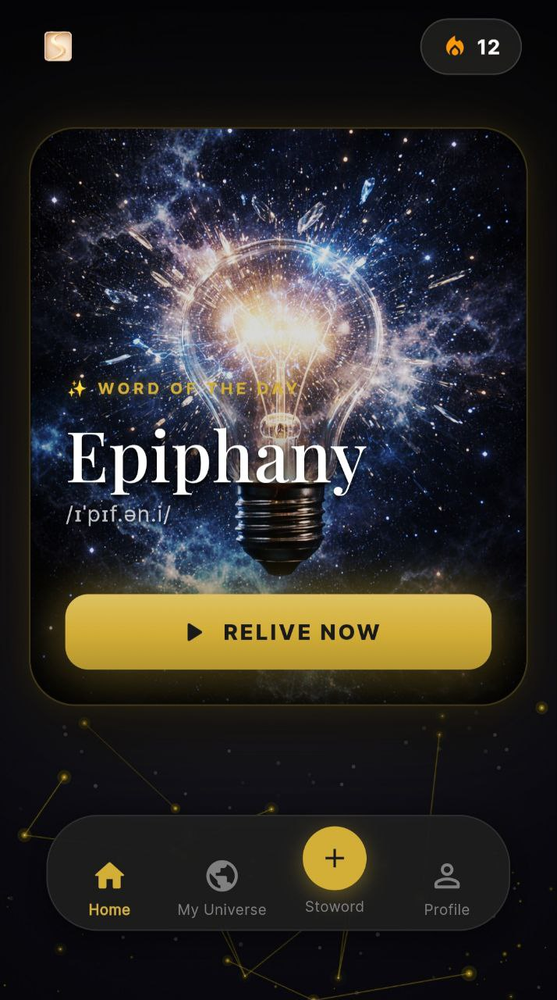
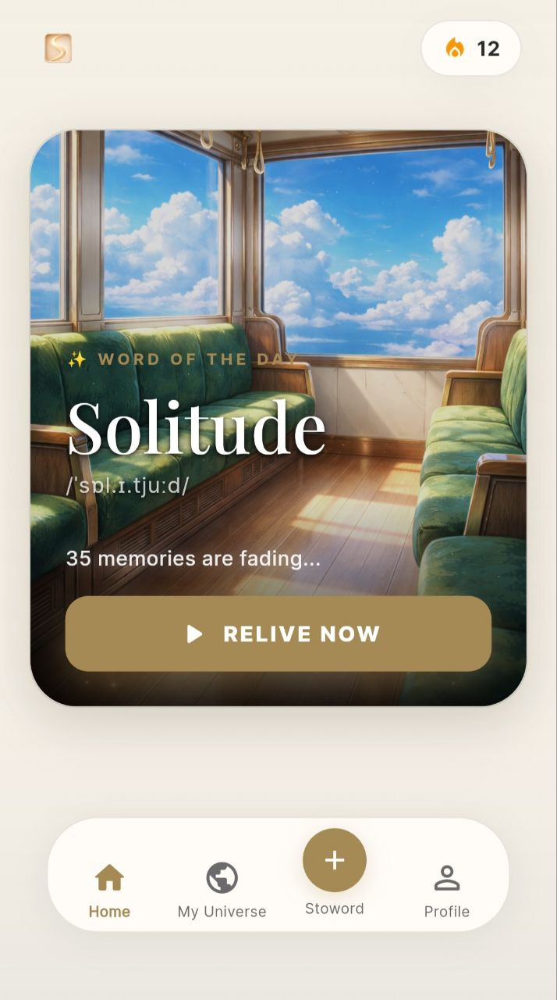

Bạn không chỉ đọc nghĩa rồi quên — bạn sống trong ngữ cảnh, bạn cảm nhận từ qua cảm xúc, và não bạn tự bật từ ra khi cần viết và nói. Đó là cách ký ức thực sự hoạt động.


Không chỉ trong phòng thi. Cả lúc viết email, thảo luận nhóm, phỏng vấn việc làm.
Không cần kế hoạch phức tạp. Không cần ghi nhớ máy móc.
Stoword được xây dựng trên 4 nguyên lý khoa học thần kinh đã được kiểm chứng — không phải ý kiến cá nhân, mà là kết quả từ hàng thập kỷ nghiên cứu về trí nhớ con người.
Mình từng kẹt ở Writing 6.0 suốt 1 năm, học từ vựng kiểu nào cũng quên. Stoword hoàn toàn khác. Mình nhớ mãi từ 'nostalgia' không phải qua một dòng định nghĩa khô khan, mà vì app đã tạo ra một câu chuyện làm mình cay mắt: Mình đang đứng co ro giữa mùa đông Hà Nội, vô tình ngửi thấy mùi cốm non và trào lên sự 'hoài niệm' da diết về cánh đồng quê của bà ngoại. Trải nghiệm đó làm mình không thể nào quên được mặt chữ.
Miễn phí. Không cần thẻ tín dụng. Bắt đầu trong 30 giây.
Bắt đầu học miễn phí